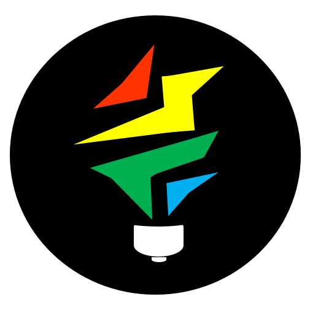

I'm always looking for new opportunities, so feel free to contact me!
 Director of Technology (2016) and Board of Founders (2015) Created the official website from scratch (including logo) and organized and mentored at the event.
Backed by (MLH), an organization that partners with more than 100 hackathons around the world..
Led the development of the 2015-16 official website, working on UI/UX, interactivity, SEO, and speed optimization. It was created using HTML/CSS/Javascript, and has a node.js backend.
Created sponsorship package and worked on cold-emailing potential companies and communicating with them. Analyzed venue options and power and wifi considerations in each to select the optimal venue for HackUC 2016
Led HackUC 2015, handling registration, kick-off presentation. Mentored new coders.
Gained expertise in: HTML/CSS, JavaScript, Node.js, MongoDB, Illustrator
Head Desk Employee - taught children/older kids who needed help, handled parents, entered data into computer
Achievements: Ran Kumon for two weeks while Head Instructor was on vacation. Always the one to go to for math help.
Ranked 2th best school in the US by USNews in 2014
Relevant Courses Taken: Introduction to Programming (2015-16), Manufacturing and Project Management (2016), Linear Algebra and Programming (2016)
Front End Certification
in JavascriptIncluded creating a Simon Game, Tic Tac Toe Game, Wikipedia Viewer,and many more projects. Did intermediate algorithms.
Relevant courses taken: Graph Theory by Example (2015)
I loved the course, and took a strong interest in Graph Theory. It taught applications in computer science, biology/chemistry, game theory, and linguistics.
Relevant online courses taken: Artificial Intelligence (MIT), Machine Learning (Stanford), Game Theory (Yale), How to Start a Startup (Stanford), Justice (Harvard).
I found them all insanely fascinating, and these were watched beginning to end with notes taken. There were many other unfinished courses as well.
National Center for Women in Technology
One of 360 girls in the nation to be awarded (1% of applicants).
My preferred development stack, I'm proficient in MongoDB, Express.js, Angular.js, and Node.js. I also have experience with Jade, React, and Scotch.io.
Projects using MEAN include a reddit clone, ToDo List App, and ClickCounter with Github Authetication. I've also used it to create a TimeStamp Microservice and Voting App.
Received Front End Certification from FreeCodeCamp.Finished Stanford's Machine Learning course by Andrew Ng (2015) and Artificial Intelligence by MIT (2016)
I enjoyed the math/logic involved and am very eager to get my hands dirty in this area. AI is a strong interest of mine.
Learned: MATLAB. Familiarity with: Neural Networks, Goal/Identification Trees, Genetic Algorithms, Probabilistic Interference
Read The Code Book by Simon Singh, found it incredibly interesting. While I have no experience, it's something I'd like to learn more about.
Took AP Computer Science and got a 5 on the AP Exam (2014)
Very familiar with Object Oriented Programming and proficient with processing.js(Java Library). Projects include a Pong game, Raindrop Catching Game, Doodle Jump Clone, Physics Based Calculator.
Participated in 2015, got certificate and t-shirt. Contributed code to Fossasia, MetaBrainz.
Programmed in React, Jade, javascript
Midterm Project for School, Head Programmer
Cloned Doodle Jump in Processing.js, a library of Java. Used public libraries for music.
Gained Proficiency in Object Oriented Programming, processing.js
Captain 2015-current
Familiarity with WordPress: created UCVTS Science Olympiad website
2015 States Results: 5th and 8th, best record in history of UCVTS
States Champion in Designer Genes; Second Place in Protein Modeling, Cell Bio